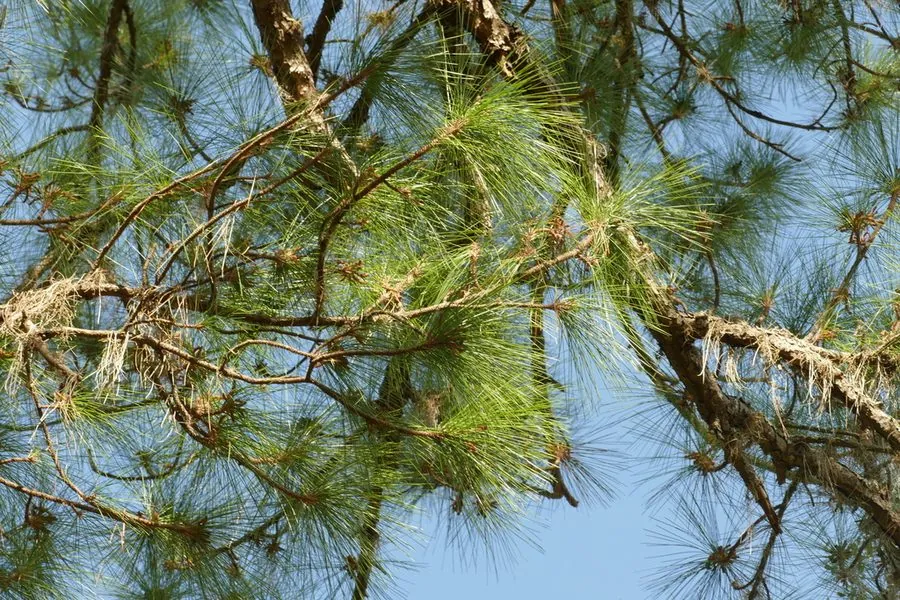

乔木 · 植物界
湿地松 Pinus elliottii

原产美国东南部的松树，针叶两针一束、耐水湿，是南方湿地与丘陵地区重要的用材和采脂树种。
- 分类
- 门裸子植物门纲松柏纲目松柏目科松科属松属
- 栖息环境
- 海拔 500 米以下的丘陵、岗地与河岸滩地，喜光耐水湿
- 地理分布
- 原产美国东南部，中国长江流域以南及华南引种栽培
- 保护级别
- 暂无评估；中国未列入国家重点保护野生植物名录
物种志
湿地松为常绿针叶乔木，高可达 30 m，树干通直，树皮灰褐色、呈鳞片状开裂；针叶 2 针一束，稀 3 针，长 15–25 cm，深绿色，粗硬。雌雄同株，雄球花聚生于新枝基部；球果圆锥形，长 6–14 cm，成熟时褐色，鳞盾隆起。
湿地松原产美国东南部，中国长江流域以南及华南引种栽培，喜光、耐水湿，也耐干旱瘠薄，适宜酸性土壤，生长迅速。木材可供建筑、家具与纸浆用；松脂产量高，是重要的采脂树种；树姿挺拔，也可作园林绿化树种。湿地松适应性强，在低丘、岗地与河岸滩地均能生长，是中国南方重要的速生用材林树种之一。
形态与习性
- 株高可达 30 m，树皮灰褐色
- 花期3 月，雄球花聚生
- 球果成熟翌年 9–10 月
- 光照强阳性，不耐庇荫
- 水分耐水湿，也耐短期干旱
- 主要用途建筑与纸浆用材、采脂提炼松香
趣味知识
- 湿地松耐水湿，在河岸滩地与低洼地也能正常生长，因此得名。
- 湿地松是重要的采脂树种，松脂产量高、质量好。
- 湿地松原产美国东南部，中国南方引种后成为速生用材林主力之一。